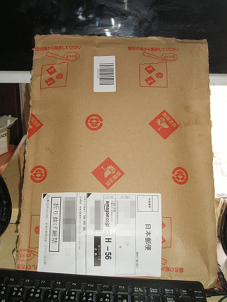
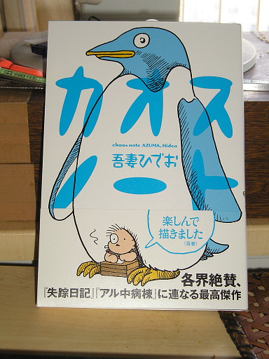

amazon で購入したブツが届きました。

開封。

不条理日記から続く不条理マンガ、シュール系マンガと聞いていたのと、出版前に公開されていた一部のページを読んでみて、不条理日記に近いフレーバーなのかなぁ、と思っていましたが、作家の経年変化によるものなのか、不条理、シュールではあるのですが、不条理日記とはかなり異なるフレーバーに仕上がってました。共通しているのは "○月○にち" と日にちが入っていることくらいです。異なる作品なので当たり前なのかもしれませんが。
あと、死をイメージする断片が結構多いな、と思いました。これも吾妻氏の経年変化でしょうか。
シュール系ギャグマンガ、不条理系ギャグマンガが好きな人にはお勧めです。
"『失踪日記』『アル中病棟』に連なる" と帯に書かれていますが、これは誤解を生むかもです。この作品は吾妻氏が得意とするシュール、不条理系ギャグマンガです。失踪日記やアル中病棟のようなエッセイマンガを期待するとがっかりするというか、意味不明感に襲われるでしょう。